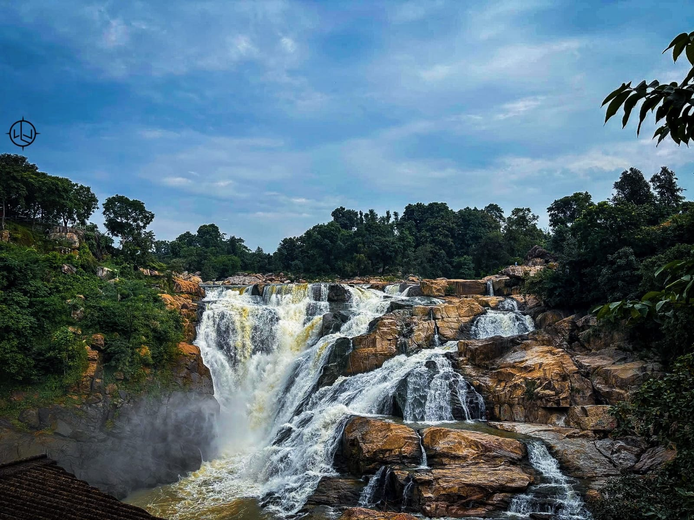
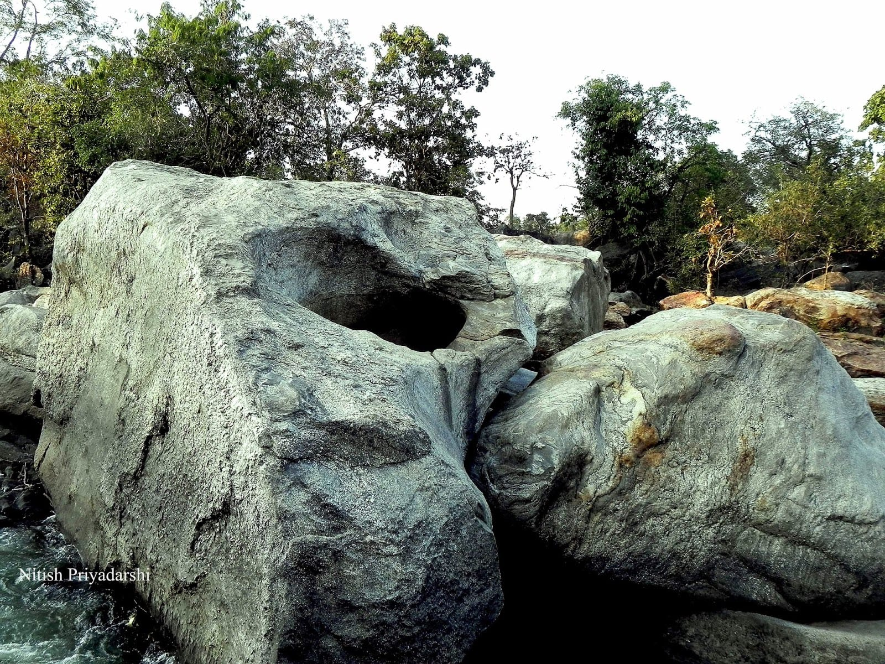
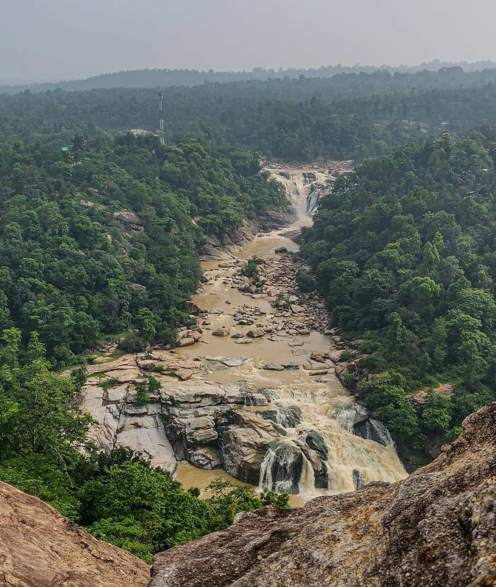
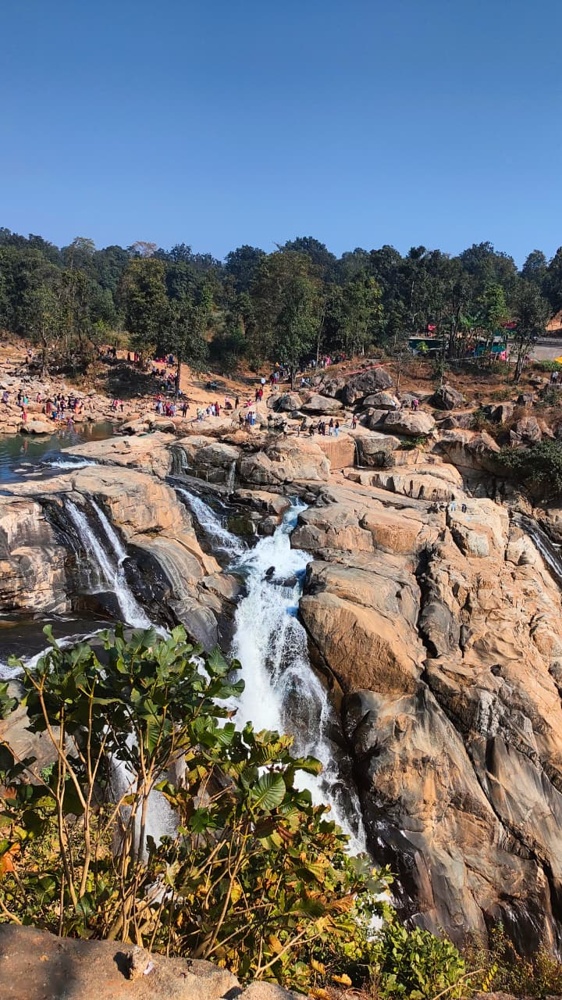
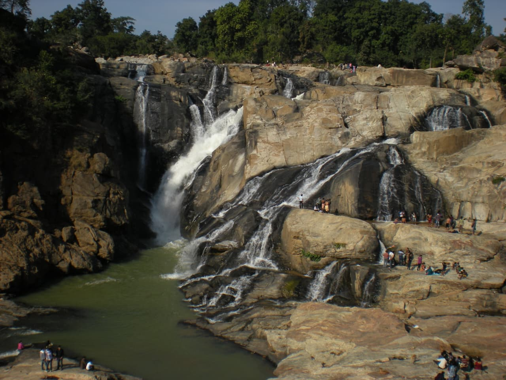

The Raw Beauty of Dassam Falls
Witness nature's masterpiece through these stunning aspects

Majestic Cascades
Ten powerful streams create a breathtaking spectacle during monsoon season.

Lush Greenery
Dense forests of sal and mahua trees surround the falls, creating a serene sanctuary.

Rock Formations
Ancient basalt rocks shaped by centuries of flowing water create unique patterns.

Seasonal Changes
From roaring monsoon torrents to gentle winter streams, each season brings new beauty.
Gallery

